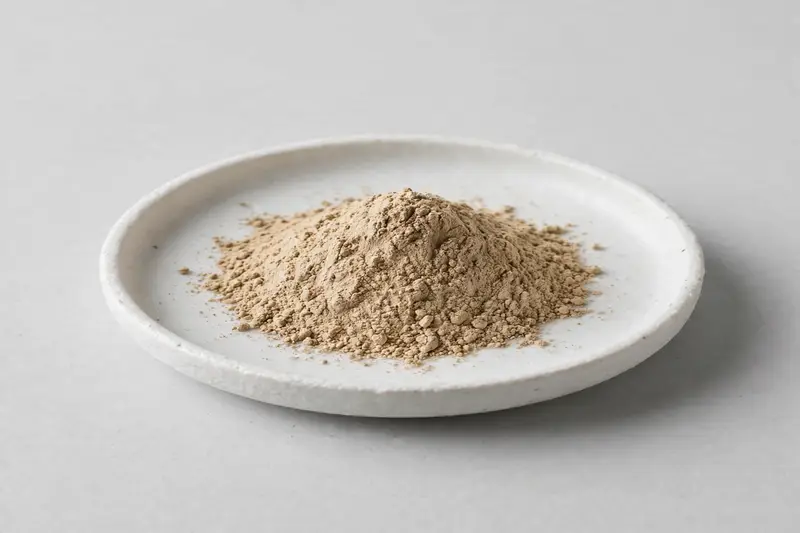

Musta — Cyperus rotundus rhizome botanical for digestive-positioned formulations.

Overview
Musta extract is produced from the rhizome of Cyperus rotundus and is typically discussed in terms of cyperene and total sesquiterpenes. It appears in traditional digestive-positioned supplement concepts and in broader Ayurvedic product lines. From Xi'an, we operate as a trading company sourcing through partner producers and confirm grade feasibility once your target specification is on hand.
Specifications below reflect commonly requested options in the market — not a stock list. Share your target spec and we'll confirm exactly what we can supply, honestly.
| Specification | Details |
|---|---|
| Botanical identity | Musta rhizome extract powder |
| Marker compound | Commonly requested spec grades: cyperene and sesquiterpene content grades; actual specs confirmed on inquiry |
| Appearance | Light brown to beige fine powder |
| Mesh size | Typically 80–100 mesh (confirm per inquiry) |
| Testing | COA/TDS arranged on request; scope agreed per your spec |
Applications
Documentation
We don't claim in-house labs or certifications we don't hold. COA and TDS documents can be arranged on request, and testing scope is agreed against your specification before supply.
FAQ
Related products
Panax ginseng
Key marker: Ginsenosides
View specs →Curcuma longa
Key marker: Curcuminoids
View specs →Nattokinase (fermented soybean enzyme)
Key marker: 20,000-40,000 FU/g
View specs →Sida cordifolia
Key marker: Alkaloid Content
View specs →Cuminum cyminum
Key marker: Cuminaldehyde Content
View specs →Send your target spec and volumes — we'll respond with a tailored quotation.
Request a Quote